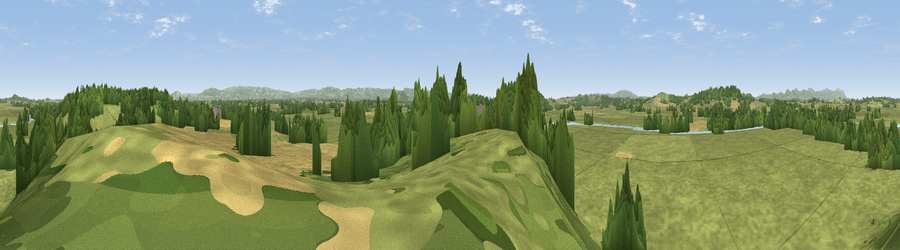

Viewpoint near Apperley
#24026 in England · top 51% of its area beats it · near ApperleyWhere it is
The exact computed spot (SO 85175 27175). Click the marker for map links.
The view, rendered

A 360° render of this exact spot computed from the terrain model, tree cover and land cover — summer colours, afternoon light, calibrated against photographs of famous viewpoints. Real trees, hedges and buildings will differ in detail.
The panorama
Grey silhouette: terrain skyline in each direction (720 bearings, Earth curvature and refraction included). Dashed green: skyline with trees (+15 m) and buildings (+8 m) as obstacles. Blue strip: how far the ground is visible on each bearing.
Where the view opens
Wedge length = distance to the farthest visible ground on that bearing (vegetation-aware). Rings at 10, 25 and 50 km.
What fills the view
77% grassland · 13% woodland · 8% cropland ·
Angular shares of the visible panorama (visual magnitude), not map area. Landscape diversity 0.32 (0–1 Shannon).
Key numbers
More beautiful places nearby
The staircase of upgrades: each row has a higher view potential than everything closer. Driving times are estimates from straight-line distance, calibrated against real road routing — check an actual route before setting out.
| Place | Direction | Drive | Score |
|---|---|---|---|
| Corse Grove Hill | WNW · 3 km | ~7 min | 67.6 |
| Viewpoint near Churchdown | SSE · 9 km | ~17 min | 74.6 |
| Viewpoint near Whaddon | S · 12 km | ~23 min | 77.7 |
| Chase End Hill | NW · 12 km | ~23 min | 81.5 |
| Ragged Stone Hill | NW · 13 km | ~24 min | 82.5 |
| Midsummer Hill | NW · 14 km | ~25 min | 83.0 |
| Millennium Hill | NW · 15 km | ~28 min | 86.9 |
| Worcestershire Beacon | NNW · 20 km | ~34 min | 87.1 |
51.94287, -2.21708 · source: screening · position refined by local search. Computed location — check access rights before visiting.